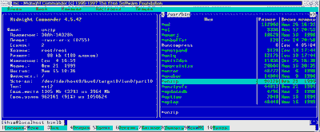
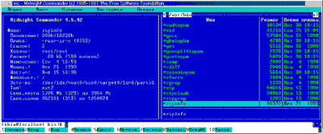
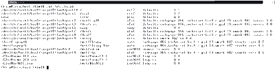

|
Файлы, файлы, файлы
Виктор Хименко
Журнал "Мир ПК", #02/2000
Человеку, ранее работавшему с DOS или Windows, при
общении с Linux прежде всего бросаются в глаза использование символа `/'
вместо '\', отсутствие имен дисков (A:, B:, C: и т. д.) и то, что в именах
файлов различаются большие и маленькие буквы. Однако другие особенности,
не столь заметные с первого взгляда, более существенны. Давайте посмотрим,
как устроена в Linux работа с файлами.
Прежде чем переходить к основному изложению, заметим, что
выражение "файловая система" имеет два значения. Так называют, во-первых,
определенный способ организации файлов, каталогов и т. д., а во-вторых,
конкретное множество файлов, каталогов и т. д., организованное по этому
способу.
Хотя Linux поддерживает более десятка самых разных
файловых систем, все "иностранные" (foreign) системы так или иначе
маскируются под стандартно используемую в этой ОС ext2fs. Давайте с нее и
начнем.
Узлы и каталоги
Во времена юности Unix, когда автор Linux еще не ходил в
школу, работа с файлами в этой ОС была организована весьма просто: все
файлы на диске нумеровались и для каждого создавалась специальная запись -
узел (inode; к сожалению, устоявшегося русского перевода этого термина
пока нет), где содержалась служебная информация о файле. Имя в состав этой
информации не включалось, а связывалось с узлом с помощью ссылки (link).
Ссылки оформлялись как пары вида "имя файла - номер узла" и хранились в
каталогах. Каталог можно было читать, как обычный файл, однако для его
модификации уже тогда требовалось использовать специальные команды.
Найдя по ссылке в каталоге узел, ядро ОС дальше
оперировало с файлом, не обращая никакого внимания на его исходное имя,
поскольку все необходимые данные (размер файла, права доступа к нему и т.
д.) извлекались уже из узла. С тех пор многое изменилось, однако в
файловой системе Linux узлы по-прежнему играют важную роль, а вся
информация о файле по-прежнему хранится отдельно от его имени.
Сколько имен у файла?
Описанная схема позволяет связать с одним файлом
несколько равноправных имен, что в ряде случаев бывает полезно. Сравните,
например, характеристики файлов unzip и zipinfo на рис. 1 и 2

Рис. 1. Характеристики файла unzip
(для получения информации использована программа Midnight Commander).

Рис. 2. Характеристики файла zipinfo
Как видим, они совпадают: у обоих файлов одно и то же
"положение" (кстати, шестнадцатеричное число 1A328h является номером
узла), одинаковая длина и т. д., причем на каждый из файлов имеется по две
ссылки - это в действительности и есть два имени. Но, будучи физически
одним и тем же файлом, unzip и zipinfo являются различными программами:
каждая из них выполняет свои действия и имеет собственный набор опций.
Никакой мистики здесь нет - просто в программу в качестве нулевого
параметра передается ее имя, по которому она и определяет, что делать
дальше.
Далее, в Unix-системах (включая Linux) нет операции
удаления файла в смысле DOS/Windows: есть только удаление ссылки на узел -
unlink - и ссылки на пустой каталог - rmdir (в некоторых Unix-системах
unlink позволяет удалить ссылку на пустой каталог, но в Linux это не так).
Сам же файл удаляется автоматически тогда, когда делается недоступным для
системы. Это означает, что не должно остаться, во-первых, ни одной ссылки
на него, а во-вторых, ни одной работающей с ним активной программы.
Именно поэтому, кстати, в Linux можно обойтись без
перезагрузки практически при любом изменении системы (за исключением
замены ядра). Чтобы обновить системную библиотеку, вы стираете ее прежнюю
версию (т. е. освобождаете соответствующую ссылку) и записываете под тем
же именем новую. Ядро откладывает момент удаления библиотеки до тех пор,
пока не закончит работу последняя из программ, ее использующих (что может
произойти много месяцев спустя). Это весьма удобно, но если не знать о
таком поведении системы, можно попасть в неприятную ситуацию.
Монтирование
Однако если ядро ОС учитывает не только состояние
файловой системы на диске, но и состояние программ, работающих с файлами,
то как быть со сменными носителями? Ведь если просто вынуть из дисковода
дискету с файлом, уже не имеющим имени, но еще не удаленным, файловая
система будет разрушена; степень повреждения зависит от разных
обстоятельств и варьирует от небольших неполадок до полного превращения в
руины. Здесь как нельзя лучше подтверждается мысль о том, что наши
недостатки - это продолжение наших достоинств.
Чтобы избежать подобных эффектов, любую файловую систему
необходимо перед началом работы с ней в явной форме подключить к ОС
(смонтировать - mount), а по окончании отключить (размонтировать -
unmount). Для этой цели служат команды mount и umount (без n, хотя
соответствующее действие называется unmount). Команда mount имеет
множество опций (см. врезку "Монтирование: подробности для
любознательных"), но обязательных аргументов у ее стандартного варианта
два: имя файла блочного устройства и имя каталога. В результате выполнения
этой команды файловая система, расположенная на указанном устройстве,
подключается к системе таким образом, что ее содержимое заменяет собой
содержимое заданного каталога (поэтому для монтирования обычно используют
пустой каталог). Команда umount выполняет обратную операцию - отсоединяет
файловую систему, после чего накопитель можно извлечь и положить на полку
(на самом деле проблемы возникают почти исключительно с дискетами: CD-ROM,
магнитно-оптический диск или Zip-диск, который забыли размонтировать,
просто не удастся вытащить без помощи скрепки - он блокируется).
Такие разные файлы
Осталось выяснить, что такое файл блочного устройства.
Для этого следует рассказать о том, какие вообще "звери" встречаются в
файловой системе. Очевидно, там есть обычные файлы и каталоги, но это
далеко не все. Файлами с точки зрения Linux являются также:
- символьные устройства;
- блочные устройства;
- именованные каналы (named pipes);
- гнезда (sockets);
- символьные ссылки (symlinks).
Все эти "звери" в чем-то похожи на обычные файлы, а в
чем-то отличаются от них (во всяком случае, все они могут быть удалены
системным вызовом unlink, что сближает их с обычными файлами и отдаляет от
каталогов). Рассмотрим их по порядку.
Символьные и блочные устройства
Файлы символьных и блочных устройств создаются с помощью
программы mknod и соответствуют внешним устройствам, а также
псевдоустройствам, таким как знаменитое пустое устройство /dev/null
(такое, при попытке чтения из которого сразу же сообщается о достижении
конца файла и при записи в которое никогда не происходит переполнения -
точный аналог NUL в DOS/Windows).
Устройства нумеруются двумя целыми числами - старшим
(major number) и младшим (minor number). Первое из них соответствует типу
устройства (например, для устройств, подключенных к первому
IDE-контроллеру, оно равно 3, для подключенных ко второму - 22 и т. д.), а
второе - конкретному устройству (например, для мастер-диска, подключенного
к первому IDE-контроллеру, оно равно 0, для первого раздела на этом диске
- 1 и т. д.). При этом символьные и блочные устройства нумеруются
независимо.
Число 30Ah в поле "положение" информации о файлах /usr/bin/unzip и
/usr/bin/zipinfo на рис. 1 и 2 обозначает как раз номер устройства: 3 -
это первый IDE-диск, а 0A - его десятый раздел.
Различие между файлами символьных и блочных устройств
заключается в том, что к первым разрешен только последовательный доступ, а
вторые допускают обращение (для чтения или записи) к произвольному месту
устройства.
Многие устройства имеют дополнительные характеристики:
скажем, на консоли (виртуальной) IBM PC есть три лампочки - Num Lock, Caps
Lock и Scroll Lock, - а последовательный порт может передавать данные с
различной скоростью. Как правило, программы в Linux работают просто с
файлами, никак или почти никак не учитывая особенности того или иного
конкретного устройства. Если же программа должна их учитывать, она
осуществляет управление соответствующими параметрами через системный вызов
ioctl, позволяющий, например, зажечь Num Lock или изменить громкость
звука. В основном использование ioctl сводится к управлению конфигурацией
(отсюда и название - I/O ConTroL, т. е. управление вводом-выводом).
Основной недостаток описанной схемы в том, что она плохо
масштабируется: различных устройств существует великое множество, и
поскольку всякое устройство, потенциально подключаемое к компьютеру,
должно получить номер (а многие - несколько номеров), этих самых номеров
явно не хватает. Кроме того, хотя в каталоге /dev, где традиционно
хранятся файлы устройств, представлен, разумеется, далеко не весь спектр
аппаратуры (только для SCSI-устройств потребовалось бы завести не одну
тысячу файлов), он все-таки обычно содержит более тысячи файлов, и лишь
очень малая их часть соответствует устройствам (или псевдоустройствам),
реально присутствующим в системе.
Эта проблема была осознана достаточно давно, и уже
предложено несколько вариантов ее решения. Однако самым распространенным
остается пока стандартный подход, когда все файлы устройств создаются
вручную программой mknod. Мне представляется наиболее удачным вариант с
использованием специальной файловой системы devfs, монтируемой в каталог
/dev, в которой специальные файлы устройств создаются и уничтожаются
автоматически по мере надобности (именно так настроен компьютер, где
сейчас пишутся эти строки).
Именованные каналы
Канал - это простейшее, но очень удобное и широко
применяемое средство обмена информацией между процессами. Все, что один
процесс помещает в канал (буквально - в "трубу"), другой может оттуда
прочитать. Если два процесса, обменивающиеся информацией, порождены одним
и тем же родительским процессом (а так чаще всего и происходит), канал
может быть неименованным. В противном случае требуется создать именованный
канал, что можно сделать с помощью программы mkfifo. При этом собственно
файл именованного канала участвует только в инициации обмена данными.
Гнезда
Вообще гнезда (и взаимодействие программ при помощи
гнезд) играют очень важную роль во всех Unix-системах, включая и Linux:
они являются ключевым понятием TCP/IP и соответственно на них целиком
строится Internet. Однако c точки зрения файловой системы гнезда
практически неотличимы от именованных каналов: это просто метки,
позволяющие связать несколько программ. После того как связь установлена,
общение программ происходит без участия файла гнезда: данные передаются
ядром ОС непосредственно от одной программы к другой*.
Символические ссылки
Символическая ссылка - относительно новое понятие в Unix.
Это особый файл с информацией о том, что требуемый файл в действительности
находится в другом месте, и о том, где именно его искать. Например, файл
/usr/bin/gzip представляет собой символическую ссылку, указывающую на файл
/bin/gzip; благодаря ей можно использовать /bin/gzip, обращаясь к нему как
к /usr/bin/gzip. Близким аналогом символических ссылок являются ярлыки
Windows 9X и NT 4.0, но ярлыки интерпретируются Проводником Windows, а
символические ссылки - непосредственно ядром ОС.
В отличие от обычной, или, как еще говорят во избежание
путаницы, жесткой ссылки, символическая ссылка может указывать на файл из
другой файловой системы (например, находящийся на другом диске). Заметим,
что при создании жесткой ссылки мы получаем два равноправных объекта (при
удалении файла /usr/bin/unzip файл /usr/bin/zipinfo будет работать
по-прежнему), а вот символическая ссылка при удалении (или
переименовании/перемещении) объекта, на который она указывает, "провисает"
и становится неработоспособной.
Во второй части статьи мы рассмотрим права доступа к файлам и работу
Linux с другими файловыми системами.
Окончание в следующем номере.
* В настоящее время гнезда, создаваемые с помощью соответствующих
специальных файлов, так же как и именованные каналы, не позволяют
связывать программы, работающие на разных машинах сети.
Монтирование: подробности для любознательных
Как уже было сказано, монтирование файловых систем
выполняется командой mount, а их размонтирование - командой umount.
Исключение составляет корневая файловая система*,
которая обслуживается отдельно и до всех остальных систем. Действительно,
только при ее наличии становятся доступными и сама команда mount, и
каталог /dev, где находятся файлы устройств, и подкаталоги для
монтирования. Чтобы файловые системы можно было монтировать при запуске ОС
и размонтировать при ее остановке, используются два файла, которые
традиционно размещаются в подкаталоге /etc: /etc/fstab и /etc/mtab.
Файл /etc/fstab содержит список файловых систем, которые
могут быть смонтированы. Конечно, необходимые параметры всегда можно
указать при вызове команды mount, но гораздо удобнее, когда они
извлекаются из файла. Содержимое моего файла /etc/fstab показано на рис.
3.

Рис. 3. Пример файла fstab
Каждой точке монтирования в нем соответствует одна
строка, состоящая из шести полей: название устройства, на котором
расположена файловая система, точка монтирования, тип файловой системы,
параметры монтирования, "уровень дампа" и порядковый номер файловой
системы для программы fsck. Рассмотрим эти поля по порядку.
Название устройства
Чаще всего в этом поле задается имя блочного устройства,
на котором размещена файловая система, но так бывает не всегда: для
файловой системы procfs, дающей доступ к внутренним структурам ядра, здесь
может находиться любой текст (в примере - слово none), для сетевой
файловой системы указывается имя сервера и подкаталога на нем и т.д. Даже
для обычных файловых систем данное поле иногда содержит нечто отличное от
имени устройства: скажем, в трех последних строках моего файла /etc/fstab
это имена файлов с образами дисков CD-ROM. Кроме того, разрешается указать
вместо имени устройства метку диска или его серийный номер, например:
LABEL=temp /tmp ext2 defaults 1 2
UUID=3a30d6b4-08a5-11d3-91c3-e1fc5550af17 /usr ext2 defaults 1 2
Эта возможность редко применяется на машинах с обычной
конфигурацией аппаратуры, но очень полезна в случае, когда к компьютеру
подключены десятки дисков через ряд SCSI-контроллеров или интерфейс
Firewire, либо когда на нем происходит работа со множеством сменных
накопителей и имеется несколько устройств для их чтения.
Точка монтирования
Поле со вполне, казалось бы, очевидным значением, но пара
маленьких подвохов все-таки имеется. Во-первых, при автоматическом
монтировании файловые системы монтируются в том порядке, в каком они
перечислены в /etc/fstab, и если, например, файловая система /home у вас
находится на отдельном диске, а /home/ftp - еще на одном диске, то строка
с описанием /home должна стоять в /etc/fstab до строки с описанием
/home/ftp. Во-вторых, для раздела (или файла) подкачки данное поле никак
не используется, и его содержимое может быть любым - лишь бы оно вообще
присутствовало (этого требует формат файла).
Тип файловой системы
Уж здесь-то какие могут быть подвохи? Их и нет. Почти.
Можно задать в этом поле значение auto, и тогда команда mount попытается
сама определить тип файловой системы. Это не так уж замечательно, как
может показаться: тип файловой системы определяется путем проверки так
называемого "магического числа", которая срабатывает далеко не всегда, а
кроме того, перебираются только файловые системы, которые поддерживаются
ядром в данный момент (они перечислены в файле /proc/filesystems). Иначе
говоря, если у вас имеется дискета с файловой системой minix, а ни одного
раздела с этой системой не смонтировано, то при явном задании типа в
память будет загружен модуль с файловой системой minix и дискета
смонтируется, а при указании типа auto этого, скорее всего, не произойдет
и смонтировать дискету не удастся.
Параметры монтирования
Это поле обладает одной весьма неприятной особенностью:
часть задаваемых в нем параметров интерпретируется командой mount, а часть
- ядром системы. Параметры, интерпретируемые ядром, различны в зависимости
от файловой системы и версии ядра (некоторые из них будут рассмотрены в
разделе, посвященном "иностранным" файловым системам), а команда mount
интерпретирует следующие параметры:
- async - весь ввод-вывод осуществляется асинхронно;
- atime - изменять параметр "время доступа" при обращении к файлам (по
умолчанию);
- auto - система может быть смонтирована при автоматическом
монтировании;
- defaults - установки по умолчанию: rw + suid + dev + exec + auto +
nouser + async;
- dev - система может содержать файлы блочных и символьных устройств;
- exec - она может содержать исполняемые файлы;
- loop - для размещения системы можно использовать обычный файл
(стандартно файловые системы размещаются на устройствах, к каковым
обычные файлы не относятся, но если указать параметр loop, программа
mount находит свободное loop-устройство, "связывает" с ним с помощью
программы losetup заданный файл и передает имя этого устройства
системному вызову mount; именно так монтируются образы CD-ROM в трех
последних строках моего файла fstab);
- noatime, noauto, nodev, noexec, nosuid, nouser - параметры,
противоположные по значению соответствующим параметрам без "no-";
- remount - повторно смонтировать уже смонтированную файловую систему
(например, чтобы сменить параметры монтирования);
- ro - смонтировать файловую систему только для чтения;
- rw - смонтировать файловую систему для чтения и записи (установка по
умолчанию);
- suid - разрешить интерпретацию битов SUID и SGID (подробнее мы
рассмотрим их в разделе, посвященном правам доступа);
- sync - весь ввод-вывод осуществляется синхронно;
- user - обычный пользователь (не суперпользователь) наделяется правом
монтировать и размонтировать данную файловую систему; этот параметр
влечет за собой noexec, nosuid и nodev, если после него явно не указано
exec, dev или suid.
"Уровень дампа"
Это поле - самое мистическое в /etc/fstab. Оно
используется программой dump, предназначенной для создания резервных
копий. Если файловая система должна участвовать в процессе резервного
копирования, то здесь должно стоять число 1, если нет - 0 (в
действительности возможны и другие значения, но чтобы объяснить их смысл,
пришлось бы вникать в тонкости работы программы dump).
Порядковый номер файловой системы для программы fsck
Перед автоматическим монтированием во время загрузки ОС
файловая система тестируется программой fsck, которая проверяет ее
целостность и, если необходимо, исправляет простейшие ошибки. Чтобы
ускорить этот процесс, можно запустить fsck параллельно для нескольких
файловых систем. Однако параллельно обрабатываемые системы должны
находиться на разных дисках, иначе вместо ускорения обработки мы получим
замедление, ибо диск будет непрерывно получать запросы на чтение разных
его участков. Значение, установленное в данном поле, позволяет влиять на
последовательность проверки: если присвоить файловым системам одинаковые
номера, они будут проверяться одновременно. Системы, для которых этот
параметр установлен в 0, не проверяются вообще. Для корневой файловой
системы его значение несущественно.
Если в файле /etc/fstab имеется строка, относящаяся к
данной файловой системе, то при вызове для нее программы mount можно
опустить параметры монтирования, название устройства или точку
монтирования. Этот файл используется также в графических оболочках, таких
как KDE, где монтирование файловой системы сводится к щелчку мышью.
Программа amd и особая файловая система autofs позволяют
сделать так, чтобы файловая система автоматически монтировалась при
"заходе" в специальный каталог и размонтировалась через некоторое время
после того, как последняя программа перестанет использовать файлы из нее.
Однако это достаточно рискованно при работе с обычными дисководами гибких
дисков: если по ошибке вынуть дискету из дисковода в тот момент, когда она
смонтирована, можно серъезно разрушить файловую систему на ней.
В файле /etc/mtab хранится информация о том, какие
файловые системы сейчас смонтированы и с какими параметрами монтирования
это было сделано. Данные о смонтированных файловых системах содержатся
также в файле /proc/mounts (и там они точнее, поскольку отображают
соответствующую внутреннюю таблицу ядра), но параметров, с которыми эти
системы были смонтированы, в нем нет, поскольку они в ядре не хранятся (а
те из них, которые интерпретируются программой mount, вообще не доходят до
ядра), поэтому /etc/mtab также находит применение.
*Другое исключение - специальная файловая система devfs, содержащая
файлы устройств.
|